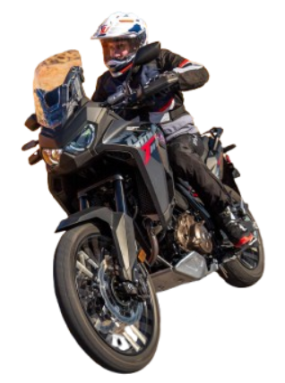

Honda Africa Twin 2026 predstavlja novu generaciju avanturističkih motocikala sa unapređenom tehnologijom, modernom elektronikom i boljim performansama.

Povećana elektronika i IMU upravljanje za bolje upravljanje i stabilnost
Tubeless gume (21/18") umesto klasičnih
Precizniji i snažniji motor sa boljim obrtnim momentom u širokom rasponu
Ažurirani TFT ekran i bolja povezivost
Opcija Showa EERA™ elektronski upravljanog ovjesa na ES i Adventure Sports modelima